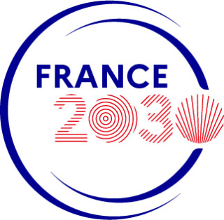

Workshop: 25 years of ProVerif

June 3, 2026
Inria Paris, amphitheater Jacques-Louis Lions
- 9:30-9:55 Welcome coffee
- 9:55-10:00 Introduction
- 10:00-12:00 First session Chair: Vincent Cheval
- 10:00-10:30 Karthikeyan Bhargavan. Verifying Protocol Implementations with ProVerif.
- 10:30-11:00 Bruno Blanchet. ProVerif with lemmas, induction, fast subsumption, and much more. slides. associated paper.
- 11:00-11:30 Alexandre Debant. 50 shades of ProVerif subtleties. slides.
- 11:30-12:00 Jessica Richards. Automated formal analysis of Signal’s Double Ratchet: attacks, fixes and security proofs. slides. associated paper.
- 12:00-13:30 Lunch
- 13:30-15:30 Second session Chair: Vincent Cheval
- 13:30-14:00 Charlie Jacomme. ProVerif: after 25 years of research, how can it still be so dumb?
- 14:00-14:30 Ioana Boureanu. Verifying Post-Compromise Security with Application Controls in ProVerif. slides. associated paper.
- 14:30-15:00 Jiachen Qian. Toward Efficient Verification of the Finite Variant Property. slides.
- 15:00-15:30 Véronique Cortier. Simultaneously Proving Privacy and Verifiability: A ProVerif Framework for Internet Voting. slides associated paper.
- 15:30-16:00 Coffee break
- 16:00-18:00 Third session Chair: Bruno Blanchet
- 16:00-16:30 Vincent Cheval. ProVerif with Xor. associated paper.
- 16:30-17:00 Mark Ryan. How Claude Code writes ProVerif. slides.
- 17:00-17:30 Joseph Lallemand. A Formal Analysis of Google PlayIntegrity with ProVerif. slides.
- 17:30-18:00 Steve Kremer. A Comprehensive Formal Security Analysis of OPC UA with ProVerif. slides. associated paper.
- 18:00 End
Registration is free but mandatory for logistical reasons.
Registration is now closed, sorry.